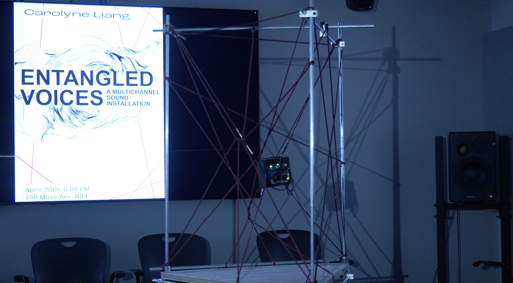
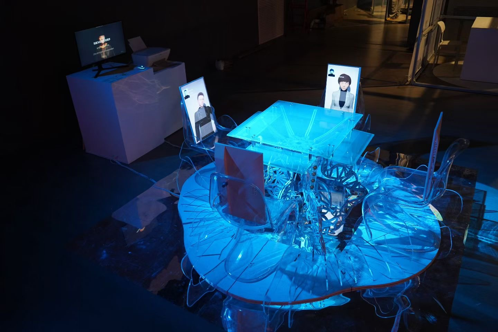
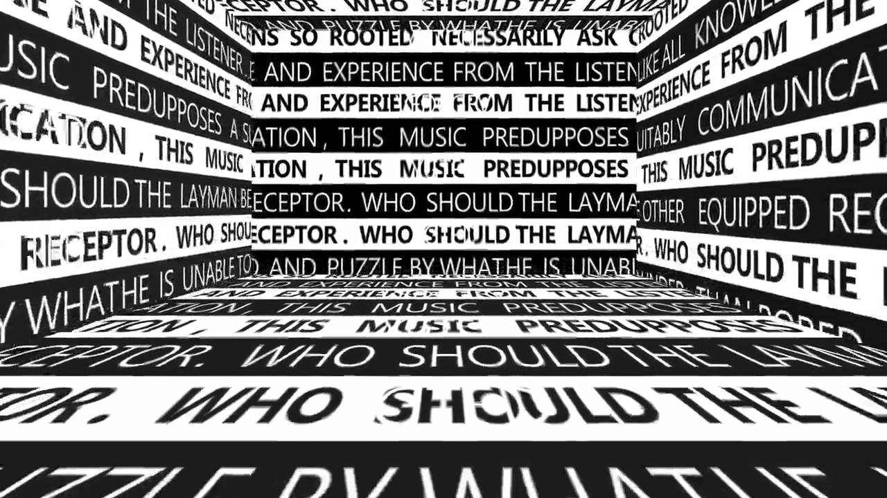
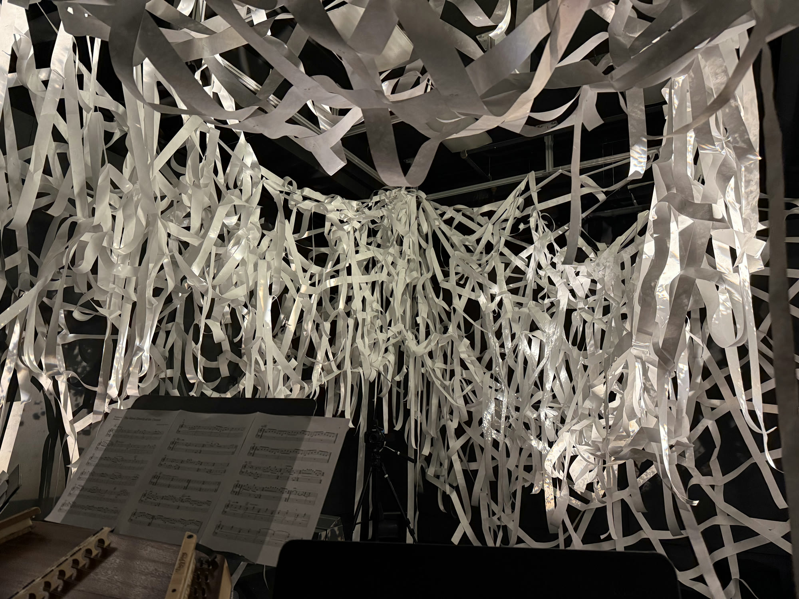

Selected work / 2025–2026
Installation.
Interactive installation, spatial audio, and collaborative audiovisual work.




Composer / Sound Arts
Sound Design
Selected work / 2025–2026
Interactive installation, spatial audio, and collaborative audiovisual work.



